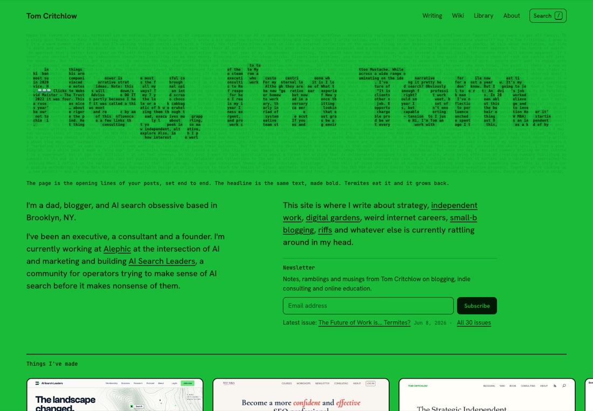
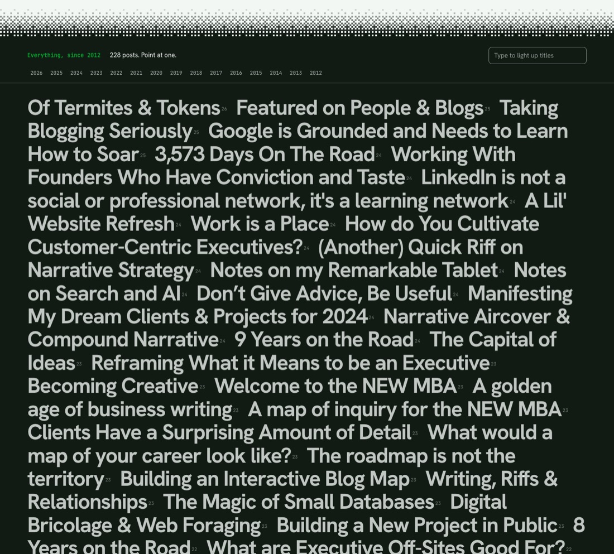

You picked A, Cut from words. This version keeps its top as it was and adds the wall of titles further down the page, on a dark ground so it reads as a different room from the green.

The headline cut out of your posts' opening lines, with termites. Then the intro and newsletter box, the projects carousel, the top posts, the fade and the latest posts.

After the latest posts the page dithers into a dark section holding all 228 titles in very large type, each one a link.
The dark section follows the reader's theme the other way round: in dark mode it becomes a light band. Links inside the mock-up do not go anywhere.